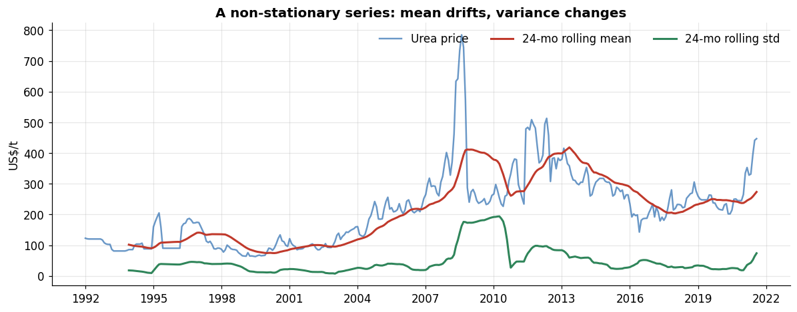
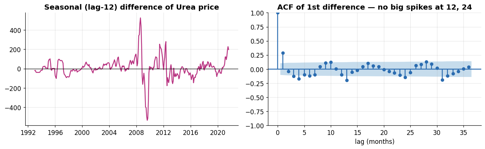
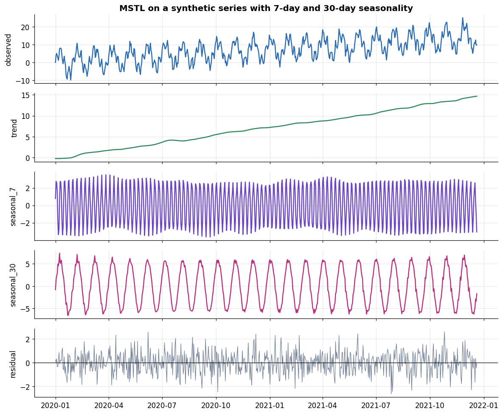
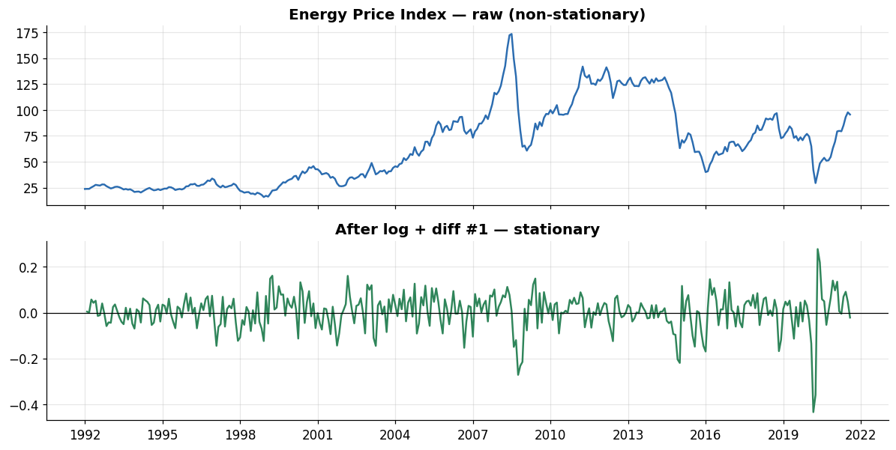

Series:Time Series Analysis in Python — from Statistical Modeling to Machine Learning
Part 1 taught us to handle time-indexed data and to look at it. Part 2 makes that looking formal. Before you can fit an ARIMA model (Part 4) or trust a forecast, you have to answer one question rigorously: is this series stationary? Almost every classical model assumes it, and the whole toolkit of this notebook exists to test for it and, when it fails, to transform the series until it holds.
What you will learn
Stationarity — strict vs. weak, and precisely why it matters
Autocorrelation (ACF) and partial autocorrelation (PACF), and how to read a correlogram
Formal tests — ADF, KPSS, and Phillips–Perron — and the trick of reading ADF and KPSS together
Transformations to stationarity — log, Box–Cox, first differencing, seasonal differencing
Decomposition revisited — classical additive vs. multiplicative, STL, and MSTL for multiple seasonalities
A repeatable stationarity workflow that turns any raw series into a model-ready one
Recap of the dataset
We continue with monthly_price.csv — 356 months (Jan 1992–Aug 2021) of global commodity prices: fertilizers (Urea_Price, MP_Price, TSP_Price), crops (Maize_Price, Rice_Price, Wheat_Price), and market indices (Food_Price_Index, Energy_Price_Index, VIX_Index). In Part 1 the plots and an STL decomposition suggested these series are trend/cycle-driven with light seasonality. Now we prove it.
0. Setup and data
New libraries in this part: statsmodels for the tests and decompositions, scipy for Box–Cox, and arch for the Phillips–Perron test. We rebuild the DatetimeIndex exactly as in Part 1 — from the reliable YEAR/MONTH columns, with an explicit month-start frequency.
A series is stationary when its statistical behaviour does not depend on when you look. Two definitions matter:
Strict stationarity — the entire joint distribution of any set of observations is unchanged when shifted in time. This is a strong, mostly theoretical condition.
Weak (covariance) stationarity — the practical one. It requires only three things:
constant mean — no trend,
constant variance — the spread doesn’t grow or shrink over time,
autocovariance that depends only on the lag — the relationship between \(y_t\) and \(y_{t-k}\) depends on the gap \(k\), not on the position \(t\).
Why it matters. Models like AR, MA, ARMA, and ARIMA are built on the assumption that the mechanism generating the data is stable. If the mean drifts or the variance explodes, estimated coefficients are unreliable and forecasts diverge. Making a series stationary is therefore not a formality — it is what licenses the models in Parts 3–4. Note the exception you already met: models like Holt–Winters and STL are designed to absorb trend and seasonality directly, so they don’t require you to pre-stationarize.
Let’s build the visual intuition first. A non-stationary series betrays itself: its rolling mean drifts and its rolling variance changes.
s = df["Urea_Price"]roll_mean = s.rolling(24).mean()roll_std = s.rolling(24).std()fig, ax = plt.subplots(figsize=(11, 4.4))ax.plot(s.index, s, color=PALETTE[0], alpha=0.7, label="Urea price")ax.plot(roll_mean.index, roll_mean, color="#c0392b", lw=2, label="24-mo rolling mean")ax.plot(roll_std.index, roll_std, color=PALETTE[2], lw=2, label="24-mo rolling std")ax.set_title("A non-stationary series: mean drifts, variance changes")ax.set_ylabel("US$/t"); ax.legend(frameon=False, ncol=3)ax.xaxis.set_major_locator(mdates.YearLocator(3))plt.tight_layout(); plt.show()

The rolling mean is clearly not flat — it climbs into 2008, collapses, and rises again — and the rolling standard deviation balloons around the 2008 spike. Both of the first two stationarity conditions fail. A blunt way to see the same thing: split the series in half and compare the two halves’ statistics.
The mean and the variance are dramatically different between the two halves — the numerical fingerprint of non-stationarity. We’ll return to this exact series after transforming it and watch these numbers converge.
2. Autocorrelation (ACF) and partial autocorrelation (PACF)
Autocorrelation measures how correlated a series is with a lagged copy of itself. The ACF at lag \(k\) is the correlation between \(y_t\) and \(y_{t-k}\). Plotted across many lags, it becomes a correlogram — the single most useful diagnostic in classical time-series analysis.
Slow, near-linear decay in the ACF is the signature of a trend / non-stationary series (each value is close to the last, so correlation dies off only gradually).
Spikes at seasonal lags (12, 24, … for monthly data) reveal seasonality.
Fast decay to zero indicates a stationary, short-memory series.
The PACF (partial autocorrelation) at lag \(k\) is the correlation between \(y_t\) and \(y_{t-k}\)after removing the influence of all the intermediate lags \(1 \dots k-1\). Where the ACF shows total association, the PACF isolates the direct effect at each lag. The two together are what let you read off the order of an ARIMA model in Part 4.
The shaded band in each plot is the ~95% confidence interval; bars inside it are statistically indistinguishable from zero.
This is a textbook non-stationary correlogram: the ACF decays extremely slowly, still well above the significance band even at lag 36, while the PACF has one dominant spike at lag 1 (near 1.0) and little beyond it — the classic pattern of a series that is essentially “this month ≈ last month plus a shock,” i.e. a random-walk-like process. That near-unit lag-1 PACF is exactly what a unit-root test formalizes next.
For contrast, here is the ACF/PACF of the first-differenced series — jumping ahead slightly to show what “stationary” looks like.
After one difference the ACF collapses to near zero after a couple of lags — the slow decay is gone. The trend has been removed and the series now looks short-memory and stationary. We’ll confirm that with formal tests rather than eyeballing.
How ACF/PACF map to model orders (a preview of Part 4). For a stationary series: an AR(p) process shows a PACF that cuts off after lag \(p\) and an ACF that tails off; an MA(q) process shows the mirror image — ACF cuts off after lag \(q\), PACF tails off. Keep this rule in your pocket; it is how we pick ARIMA orders later.
3. Formal tests for stationarity
Eyeballing rolling statistics and correlograms is necessary but not sufficient. Three hypothesis tests put a number on it. The crucial subtlety is that they do not all share the same null hypothesis — so you must read them carefully, and ideally in combination.
3.1 Augmented Dickey–Fuller (ADF)
The ADF test checks for a unit root (the mathematical source of a stochastic trend).
H₀: the series has a unit root → non-stationary
H₁: no unit root → stationary
Decision: if p < 0.05, reject H₀ ⇒ conclude stationary.
ADF cannot reject the unit root for raw Urea price (p ≈ 0.49) — it reads as non-stationary, matching the correlogram.
3.2 Kwiatkowski–Phillips–Schmidt–Shin (KPSS)
KPSS flips the logic — its null is the opposite of ADF’s.
H₀: the series is (trend- or level-) stationary
H₁: non-stationary
Decision: if p < 0.05, reject H₀ ⇒ conclude non-stationary.
Because the two tests have opposite nulls, agreement between them is strong evidence. (Note: statsmodels reports KPSS p-values only within a table range, so it may return a capped value like 0.01 or 0.10 with a warning; we suppress the warning and flag the bound.)
def kpss_test(series, regression="c"): series = series.dropna()with warnings.catch_warnings(): warnings.simplefilter("ignore") stat, p, lags, crit = kpss(series, regression=regression, nlags="auto") note =" (p capped at table bound)"if p in (0.01, 0.10) else""return {"test": "KPSS", "statistic": round(stat, 3), "p_value": round(p, 4),"used_lags": lags,"conclusion": ("non-stationary"if p <0.05else"stationary") }pd.DataFrame([kpss_test(s)])
test
statistic
p_value
used_lags
conclusion
0
KPSS
1.664
0.01
11
non-stationary
3.3 Phillips–Perron (PP)
Phillips–Perron tests the same unit-root null as ADF but corrects for autocorrelation and heteroscedasticity non-parametrically rather than by adding lagged terms. It is a useful robustness check alongside ADF, and lives in the arch package.
Because ADF and KPSS have opposite nulls, their four possible combinations map to four distinct situations — this 2×2 is one of the most practically useful tables in the whole subject:
ADF result
KPSS result
Interpretation
Action
Stationary
Stationary
Stationary
Model as-is
Non-stationary
Non-stationary
Non-stationary
Difference the series
Stationary
Non-stationary
Difference-stationary
Difference the series
Non-stationary
Stationary
Trend-stationary
Remove a deterministic trend (detrend)
Let’s wrap all three tests into one report we can reuse on any series.
All three tests line up: raw Urea price is non-stationary, and the ADF+KPSS combination prescribes differencing. Let’s run the same report across every column to see which series share the problem (they all will — that is the norm for price data).
When a series fails the tests, we transform it. There are two distinct problems to fix, and they call for different tools:
Non-constant variance (spread grows with level) → variance-stabilizing transforms: log or Box–Cox.
Non-constant mean (trend, seasonality) → differencing: first difference for trend, seasonal difference for seasonality.
Do variance stabilization first, then differencing.
4.1 Log and Box–Cox — stabilizing the variance
A log transform compresses large values more than small ones, taming a variance that grows with the level. Box–Cox generalizes this with a parameter λ that the data chooses: λ = 0 is exactly the log, λ = 1 is (essentially) no transform. Box–Cox requires strictly positive data, which all our prices satisfy.
λ ≈ 0.06 is very close to zero, so Box–Cox is telling us a log transform is about right for this series — unsurprising for prices, whose fluctuations tend to scale with their level. Notice the 2008 spike is much less violent on the log and Box–Cox scales: the variance is more even across time. But the trend remains — variance stabilization alone does not create stationarity.
4.2 Differencing — removing the trend
The first difference\(\nabla y_t = y_t - y_{t-1}\) removes a linear trend and usually delivers stationarity in one step. If one difference isn’t enough you can difference again (second-order), but rarely need more than two — over-differencing introduces artificial negative autocorrelation, so stop as soon as the tests pass.
After a log-and-difference the series oscillates around a constant zero mean with roughly stable variance, and all three tests now agree it is stationary. Return to the split-half check from Section 1 to see the numbers converge.
The two halves’ means are both essentially zero and their standard deviations are close — exactly what Section 1’s non-stationary version failed to show. The series is now model-ready.
4.3 Seasonal differencing
When a series has a seasonal cycle, a seasonal difference\(y_t - y_{t-m}\) (with \(m=12\) for monthly data) removes it. Our commodities are only lightly seasonal, so we demonstrate the mechanics and confirm — via ACF — that no strong seasonal spikes remain to justify it here.
s_seasonal_d = s.diff(12).dropna() # year-over-year differencefig, axes = plt.subplots(1, 2, figsize=(12, 3.8))axes[0].plot(s_seasonal_d.index, s_seasonal_d, color=PALETTE[4])axes[0].axhline(0, color="k", lw=0.8)axes[0].set_title("Seasonal (lag-12) difference of Urea price")axes[0].xaxis.set_major_locator(mdates.YearLocator(4))plot_acf(s.diff().dropna(), lags=36, ax=axes[1], color=PALETTE[0], vlines_kwargs={"colors": PALETTE[0]})axes[1].set_title("ACF of 1st difference — no big spikes at 12, 24")axes[1].set_xlabel("lag (months)")plt.tight_layout(); plt.show()

In the ACF of the first difference there is no dominant spike at lags 12 or 24, confirming Part 1’s finding that seasonality is weak here — so a plain first difference suffices and we don’t need the seasonal one. For a strongly seasonal series (retail sales, electricity demand) you would often apply both a seasonal and a first difference.
5. Decomposition — separating the components
Differencing removes structure to reach stationarity. Decomposition instead exposes the structure, splitting a series into trend, seasonal, and residual parts you can inspect. Part 1 introduced STL; here we treat the family properly.
5.1 Classical decomposition: additive vs. multiplicative
Classical seasonal_decompose estimates the trend with a moving average, then the seasonal component as the average detrended value per month. The modelling choice is additive vs. multiplicative:
Additive\(y_t = T_t + S_t + R_t\) — use when the seasonal swing is roughly constant in absolute size regardless of level.
Multiplicative\(y_t = T_t \times S_t \times R_t\) — use when the swing grows with the level (common for prices; equivalently, additive on the log).
How do we choose objectively? The better model leaves a residual with no remaining structure — its residual should look most like flat noise. A simple proxy is the residual’s coefficient of variation, or the correlation of the residual with the level (a good decomposition leaves them uncorrelated).
def residual_quality(dec, multiplicative=False): resid = dec.resid.dropna() center =1.0if multiplicative else0.0# correlation between |residual| and the trend level: near 0 is better trend = dec.trend.reindex(resid.index) corr = np.corrcoef((resid - center).abs(), trend)[0, 1]return {"resid_std": round(resid.std(), 4),"abs_resid ~ level corr": round(corr, 3)}pd.DataFrame({"additive": residual_quality(add, multiplicative=False),"multiplicative": residual_quality(mul, multiplicative=True),}).T
resid_std
abs_resid ~ level corr
additive
33.9888
0.377
multiplicative
0.0744
0.181
The multiplicative residual is far less correlated with the level, i.e. its errors no longer grow with price — the expected result for commodity prices and a concrete reason to prefer the multiplicative view (or, equivalently, to work on the log scale as we did in Section 4).
5.2 STL — a robust, flexible decomposition
STL (Seasonal-Trend using Loess) is more flexible than classical decomposition: it lets the seasonal shape evolve slowly over time, handles outliers when robust=True, and doesn’t discard endpoints the way a centered moving average does. We met it in Part 1; here we use it to deseasonalize — subtract the seasonal component to isolate trend-plus-noise, a common preprocessing step.
Classical and STL decomposition assume one seasonal period. Many real series have several at once — hourly electricity demand has a daily cycle and a weekly cycle; retail data can carry weekly and yearly patterns. MSTL (Multiple STL) peels off each seasonal period in turn.
Our monthly commodity data has only one natural cycle (annual, period 12), so to show MSTL doing its distinctive job we build a small synthetic daily series with a 7-day and a 30-day cycle, then let MSTL separate them.
rng = np.random.default_rng(7)n =24*30# ~2 years of daily datat = np.arange(n)weekly =3.0* np.sin(2* np.pi * t /7) # 7-day cyclemonthly =6.0* np.sin(2* np.pi * t /30) # 30-day cycletrend =0.02* tsynthetic = pd.Series(trend + weekly + monthly + rng.normal(0, 1.2, n), index=pd.date_range("2020-01-01", periods=n, freq="D"), name="synthetic")mstl = MSTL(synthetic, periods=(7, 30)).fit()fig, axes = plt.subplots(5, 1, figsize=(11, 9), sharex=True)axes[0].plot(synthetic.index, synthetic, color=PALETTE[0]); axes[0].set_ylabel("observed")axes[0].set_title("MSTL on a synthetic series with 7-day and 30-day seasonality")axes[1].plot(mstl.trend.index, mstl.trend, color=PALETTE[2]); axes[1].set_ylabel("trend")seas = mstl.seasonalaxes[2].plot(seas.index, seas["seasonal_7"], color=PALETTE[3]); axes[2].set_ylabel("seasonal_7")axes[3].plot(seas.index, seas["seasonal_30"], color=PALETTE[4]); axes[3].set_ylabel("seasonal_30")axes[4].plot(mstl.resid.index, mstl.resid, color=PALETTE[5], lw=0.8); axes[4].set_ylabel("residual")axes[4].axhline(0, color="k", lw=0.8)plt.tight_layout(); plt.show()

MSTL cleanly recovers both injected cycles into separate seasonal_7 and seasonal_30 panels, plus the underlying trend — something single-period decomposition cannot do. When you meet high-frequency data in later parts, this is the tool that untangles its overlapping rhythms.
6. The stationarity workflow, end-to-end
Putting the pieces together, here is the repeatable procedure to take any raw series to a model-ready stationary one:
Plot the series and its rolling mean/std — form a hypothesis.
Test with ADF + KPSS (add PP for robustness); read them together.
If variance grows with level → log / Box–Cox.
If a trend remains → first difference; if seasonality remains → seasonal difference.
Re-test after each transform; stop as soon as the series is stationary (don’t over-difference).
Let’s run it as a single function on a fresh series — Energy_Price_Index — and report the transform that gets us there.
def make_stationary(series, name="series", max_d=2): log = np.log(series.dropna()) _, verdict = stationarity_report(log, name) steps = ["log"] work = log d =0while"stationary"!= verdict.split()[0] and d < max_d: work = work.diff().dropna(); d +=1 _, verdict = stationarity_report(work, name) steps.append(f"diff #{d}")return work, steps, verdictenergy = df["Energy_Price_Index"]stat_series, steps, final_verdict = make_stationary(energy, "Energy_Price_Index")print("Transforms applied:", " -> ".join(steps))print("Final verdict :", final_verdict)fig, axes = plt.subplots(2, 1, figsize=(11, 5.6), sharex=True)axes[0].plot(energy.index, energy, color=PALETTE[0]); axes[0].set_title("Energy Price Index — raw (non-stationary)")axes[1].plot(stat_series.index, stat_series, color=PALETTE[2]); axes[1].axhline(0, color="k", lw=0.8)axes[1].set_title(f"After {' + '.join(steps)} — stationary")axes[1].xaxis.set_major_locator(mdates.YearLocator(3))plt.tight_layout(); plt.show()
Transforms applied: log -> diff #1
Final verdict : stationary

7. Exercises
Work these against the same df; a solution to the first is provided.
Full report. Run stationarity_report on Wheat_Price raw, then on its log-first-difference. Confirm the transform achieves stationarity.
Correlograms. Plot ACF and PACF (36 lags) for MP_Price raw and differenced. Describe how the slow decay disappears.
Box–Cox by series. Compute the Box–Cox λ for each of the three fertilizer prices. Which is closest to a pure log (λ ≈ 0)?
Additive vs multiplicative. Decompose Maize_Price both ways and use the residual_quality helper to argue which model fits better.
Seasonal strength. Using STL on Rice_Price, compute the seasonal strength \(\max(0,\,1 - \mathrm{Var}(R)/\mathrm{Var}(S+R))\) and compare it to the trend strength. Does the number match the “light seasonality” story?
Wheat raw verdict: non-stationary (difference)
Wheat Δlog verdict: stationary
test
statistic
p_value
used_lags
conclusion
series
version
0
ADF
-2.480
0.1205
7.0
non-stationary
Wheat raw
raw
1
KPSS
0.902
0.0100
11.0
non-stationary
Wheat raw
raw
2
Phillips–Perron
-2.249
0.1891
NaN
non-stationary
Wheat raw
raw
3
ADF
-15.268
0.0000
0.0
stationary
Wheat Δlog
Δlog
4
KPSS
0.074
0.1000
2.0
stationary
Wheat Δlog
Δlog
5
Phillips–Perron
-15.023
0.0000
NaN
stationary
Wheat Δlog
Δlog
8. Key takeaways
Stationarity — constant mean, constant variance, lag-only autocovariance — is the assumption classical models rest on. Test for it before modelling.
The ACF/PACF correlogram is your fastest diagnostic: slow ACF decay ⇒ trend/non-stationary; spikes at 12, 24 ⇒ seasonality; fast decay ⇒ stationary. The AR/MA cut-off rules preview ARIMA order selection in Part 4.
ADF and KPSS have opposite nulls; read them together via the 2×2 table to distinguish difference-stationary from trend-stationary. Phillips– Perron is a robustness check on ADF.
Fix variance with log/Box–Cox first, then fix the mean with differencing. Stop as soon as the tests pass — over-differencing does harm.
Decomposition exposes structure: choose additive vs. multiplicative by which leaves a structureless residual (multiplicative ≈ log-additive, and fits our prices better); STL is the robust workhorse; MSTL handles multiple seasonalities.
What’s next — Part 3: Smoothing & Exponential Methods
With stationarity understood, Part 3 turns to our first forecasting models: moving averages, simple exponential smoothing, Holt’s linear trend, and Holt–Winters seasonal smoothing — models that, unlike ARIMA, absorb trend and seasonality directly and give us honest baselines to beat.